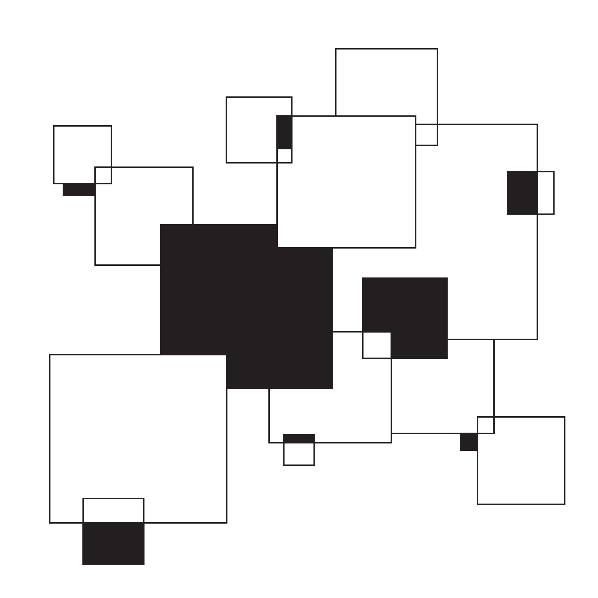
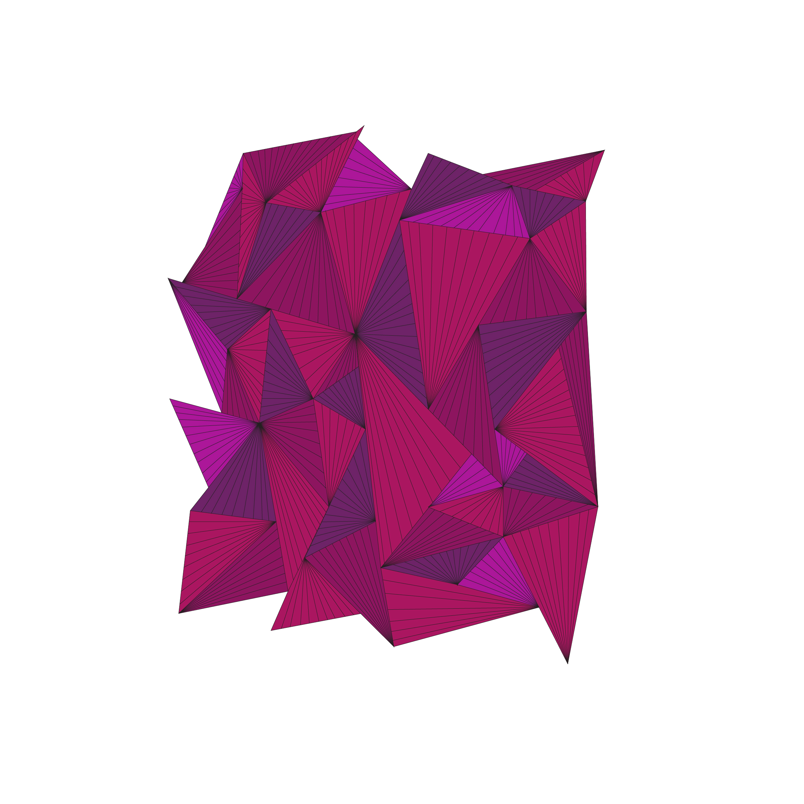

Elements
Digital Design
2025
Three elements that each expand their basic shapes into larger, full pieces. Each one considers how simple shapes and relationships envoke specific responses.



Three elements that each expand their basic shapes into larger, full pieces. Each one considers how simple shapes and relationships envoke specific responses.

